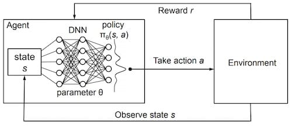

TensorFlow 2.0 (八) - 强化学习 DQN 玩转 gym Mountain Car
源代码/数据集已上传到
Github - tensorflow-tutorial-samples
这篇文章是 TensorFlow 2.0 Tutorial 入门教程的第八篇文章。
实现DQN(Deep Q-Learning Network)算法，代码90行
MountainCar 简介 上一篇文章TensorFlow 2.0 (七) - 强化学习 Q-Learning 玩转 OpenAI gym 介绍了如何用**Q表(Q-Table)**，来更新策略，使小车顺利达到山顶，整个代码只有50行。我们先回顾一下上一篇文章的要点。
MountainCar-v0 的游戏目标
向左/向右推动小车，小车若到达山顶，则游戏胜利，若200回合后，没有到达山顶，则游戏失败。每走一步得-1分，最低分-200，越早到达山顶，则分数越高。
MountainCar-v0 的几个重要的变量
State: [position, velocity]，position 范围 [-0.6, 0.6]，velocity 范围 [-0.1, 0.1]
Action: 0(向左推) 或 1(不动) 或 2(向右推)
Reward: -1
Done: 小车到达山顶或已花费200回合
Q-Table 的更新方程
Q[s][a] = (1 - lr) * Q[s][a] + lr * (reward + factor * max(Q[next_s]))
神经网络替换 Q-Table 这一篇文章，我们将借助TensorFlow 2.0中的keras库，搭建深度神经网络(Deep Netural Network, DNN)，替代Q-Table，即**深度Q网络(Deep Q-Learning Network, DQN)**，实现Q值的计算。
我们将神经网络比作一个函数，神经网络代替Q-Table其实就是在做 函数拟合 ，也可以称为**值函数近似(Value Function Approximation)**。
维基百科上有一个**万能近似定理(Universal approximation theorem)**，Universal approximation theorem 定理表明：前馈神经网络，只需具备单层隐含层和有限个神经单元，就能以任意精度拟合任意复杂度的函数。
这是我们上篇文章定义的Q-Table
1 Q = defaultdict(lambda : [0 , 0 , 0 ])
输入(key): 一维向量，(position, velocity)
输出(value)：一维向量，(action0_value, action1_value, action2_value)
接下来那我们按照定义的输入输出，简单搭一个神经网络吧。
1 2 3 4 5 6 7 8 9 10 11 12 13 14 15 16 17 18 19 20 21 22 23 24 25 26 27 28 29 30 31 32 33 34 35 36 37 38 from collections import dequeimport randomimport gymimport numpy as npfrom tensorflow.keras import models, layers, optimizersclass DQN (object ): def __init__ (self ): self .step = 0 self .update_freq = 200 self .replay_size = 2000 self .replay_queue = deque(maxlen=self .replay_size) self .model = self .create_model() self .target_model = self .create_model() def create_model (self ): """创建一个隐藏层为100的神经网络""" STATE_DIM, ACTION_DIM = 2 , 3 model = models.Sequential([ layers.Dense(100 , input_dim=STATE_DIM, activation='relu' ), layers.Dense(ACTION_DIM, activation="linear" ) ]) model.compile (loss='mean_squared_error' , optimizer=optimizers.Adam(0.001 )) return model def act (self, s, epsilon=0.1 ): """预测动作""" if np.random.uniform() < epsilon - self .step * 0.0002 : return np.random.choice([0 , 1 , 2 ]) return np.argmax(self .model.predict(np.array([s]))[0 ]) def save_model (self, file_path='MountainCar-v0-dqn.h5' ): print ('model saved' ) self .model.save(file_path)
网络结构很简单，只有一层隐藏层的全连接网络(Full Connected Network, FC)。但是我们用这个网络结构生成了2个model，一个是预测 使用的model，另一个是训练时使用的target_model。看完下面的代码，就容易理解了。
1 2 3 4 5 6 7 8 9 10 11 12 13 14 15 16 17 18 19 20 21 22 23 24 25 26 27 28 29 30 31 32 class DQN (object ): def remember (self, s, a, next_s, reward ): """历史记录，position >= 0.4时给额外的reward，快速收敛""" if next_s[0 ] >= 0.4 : reward += 1 self .replay_queue.append((s, a, next_s, reward)) def train (self, batch_size=64 , lr=1 , factor=0.95 ): if len (self .replay_queue) < self .replay_size: return self .step += 1 if self .step % self .update_freq == 0 : self .target_model.set_weights(self .model.get_weights()) replay_batch = random.sample(self .replay_queue, batch_size) s_batch = np.array([replay[0 ] for replay in replay_batch]) next_s_batch = np.array([replay[2 ] for replay in replay_batch]) Q = self .model.predict(s_batch) Q_next = self .target_model.predict(next_s_batch) for i, replay in enumerate (replay_batch): _, a, _, reward = replay Q[i][a] = (1 - lr) * Q[i][a] + lr * (reward + factor * np.amax(Q_next[i])) self .model.fit(s_batch, Q, verbose=0 )
整个结构如下图所示：

我们需要用到上文提到的更新方程，来构造训练数据。其中Q_next是对next_s的预测值，在这里其实也可以使用model，但是model变化得太过频繁，而且我们在训练时，是以batch 为单位进行训练的，也就是说很多训练数据对应的是之前状态的model，而不是频繁更新值的model，因此，我们使用更新频率低的target_model来计算next_s的Q值。
同时使用2个Q-Network的算法被称为双Q网络(Double DQN, DDQN)。因为传统的DQN普遍会过高估计Action的Q值，误差会随着Action的增加而增加，可能导致某个次优的值超过了最优Action的Q值，永远无法找到最优解。DDQN能够有效地解决这个问题。DQN 在比较简单的游戏，比如 CartPole-v0 能够取得较好的效果，但在MountainCar-v0 这个游戏中，如果只使用 DQN 很难找到最优解。
target_model每训练update_freq(200)次，更新权重与model一致。
那为什么在Q-Table中，可以用单步的数据来进行更新，但换作了神经网络，就需要以batch 为单位来进行训练呢？这个问题在知乎有过讨论，链接在这里：深度学习中的batch的大小对学习效果有何影响？ ，简单说，如果单步训练，即batch 为1，每次朝着单步的梯度方向修正，横冲直撞各自为政，难以收敛。如果batch 过大，容易过拟合。而且DQN是增强学习算法，前面的训练数据质量较差，随着训练的进行，产生的动作价值越来越高，增强学习更为看重后面的训练数据，所以batch 也不宜过大。
而这一点，也是replay_queue的最大容量设置为2000 的原因。队列有先进先出的特性，当后面的数据加进来后，如果数据条数超过2000，前面的数据就会从队列中移除。后面的训练数据对于强化学习更重要。
可改动的 Reward 代码中还有这么一个细节：
1 2 if next_s[0 ] >= 0.4 : reward += 1
MountainCar-v0这个游戏中，State由2个值构成，(position, velocity)。山顶的位置是0.5 ，因此当position 大于0.4 时，给Reward额外加1 。这么做，是希望加快神经网络的收敛，更快地达到预期结果。每一步的Reward其实都是可以调整的，怎么做会让训练效果更好，可以动动脑，尝试尝试。
提前终止的 DQN 训练 好，神经网络已经准备就绪，接下来就开始训练吧。
1 2 3 4 5 6 7 8 9 10 11 12 13 14 15 16 17 18 19 20 21 22 23 24 25 env = gym.make('MountainCar-v0' ) episodes = 1000 score_list = [] agent = DQN() for i in range (episodes): s = env.reset() score = 0 while True : a = agent.act(s) next_s, reward, done, _ = env.step(a) agent.remember(s, a, next_s, reward) agent.train() score += reward s = next_s if done: score_list.append(score) print ('episode:' , i, 'score:' , score, 'max:' , max (score_list)) break if np.mean(score_list[-10 :]) > -160 : agent.save_model() break env.close()
如果看过TensorFlow 2.0 (六) - 监督学习玩转 OpenAI gym game 和TensorFlow 2.0 (七) - 强化学习 Q-Learning 玩转 OpenAI gym 这两篇文章的话，这部分代码就非常简单了。
我们在训练过程中，记录了每一次游戏的分数。并且，如果最近10次的平均分高于**-160**时，结束训练，并保存模型。
运行一下，看看效果吧。
1 2 3 4 5 6 7 8 9 10 11 12 $ python dqn.py episode: 0 score: -200.0 max: -200.0 episode: 1 score: -200.0 max: -200.0 episode: 2 score: -200.0 max: -200.0 ... episode: 124 score: -200.0 max: -200.0 episode: 125 score: -138.0 max: -138.0 ... episode: 166 score: -144.0 max: -97.0 episode: 167 score: -166.0 max: -97.0 episode: 168 score: -136.0 max: -97.0 model saved
可以看到，在第125次 时，首次成功爬到了山顶，在168次 的时候，平均分达到预期，停止了训练。
训练效果绘图 接下来，我们添加3行代码，将整个训练过程中的score_list的变化情况画出来，直观感受强化学习的学习过程。
1 2 3 4 import matplotlib.pyplot as pltplt.plot(score_list, color='green' ) plt.show()
模型预测/测试 和之前一样，准备了一个非常简单的可视化的测试代码，直观地感受下最终的游戏效果。
1 2 3 4 5 6 7 8 9 10 11 12 13 14 15 16 17 18 19 20 import timeimport gymimport numpy as npfrom tensorflow.keras import modelsenv = gym.make('MountainCar-v0' ) model = models.load_model('MountainCar-v0-dqn.h5' ) s = env.reset() score = 0 while True : env.render() time.sleep(0.01 ) a = np.argmax(model.predict(np.array([s]))[0 ]) s, reward, done, _ = env.step(a) score += reward if done: print ('score:' , score) break env.close()
运行一下，还不错~
1 2 $ python test_dqn.py score: -161.0
代码已经上传到Github - tensorflow-tutorial-samples ，dqn.py 只有90行，不妨试一试吧~
附 推荐
上一篇 « TensorFlow 2.0 (七) - 强化学习 Q-Learning 玩转 OpenAI gym
下一篇 » 博客折腾记(四) - 原创资格是争取来的